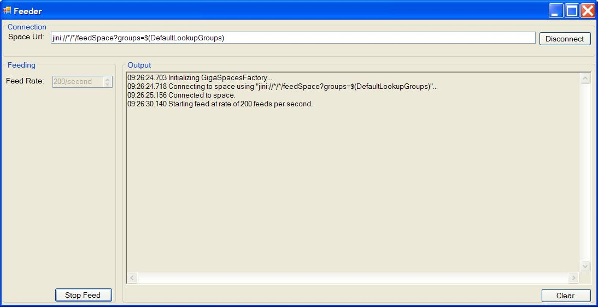
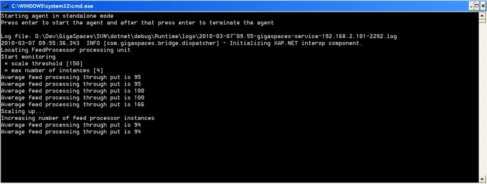

Example Root|
The Administration and Monitoring API allows you to monitor an application's health and its resources, to enforce a specific pre-defined configurable SLA that scales the application while it is running. This ensures a deterministic response time when there is an increasing number of users accessing the system, and also ensures the high-availability and robustness of the application.
The following example illustrates how you can construct a simple processing unit (The Scaling Agent) to monitor an application deployed to
The activities to scale up the application could be: starting a new GSC on remote machines, and starting additional application instances. In the same way, the scaling agent can be extended to scale down the application to terminate running GSCs, and reduce the amount of application instances.
The scaling agent periodically samples the throughput of feeds that are processed by the running application instances, and compares the average throughput per instance to a specific threshold. If the average throughput is larger than the pre-defined threshold, which is part of the processing unit configuration, the scaling agent scales up the application by starting a new GSC, and by increasing the amount of instances (see the ScaleUp() method). The sampling is done by letting the feed processor implement the IServiceMonitorsProvider interface, which exposes the public API that is used by the agent.
[BasicProcessingUnitComponent( Name = "Agent" )]
public class Agent : IDisposable
{
[..]
public Agent()
{
//Create service grid admin
ServiceGridAdminBuilder adminBuilder = new ServiceGridAdminBuilder();
adminBuilder.Groups.Add("$(DefaultLookupGroups)");
_admin = adminBuilder.CreateAdmin();
Console.WriteLine("Locating FeedProcessor processing unit");
_monitoredPu = _admin.ProcessingUnits.WaitFor("FeedProcessor", TimeSpan.FromSeconds(30));
if (_monitoredPu == null)
{
Console.WriteLine("Could not locate FeedProcessor processing unit after 30 seconds");
throw new TimeoutException("Could not locate FeedProcessor processing unit after 30 seconds");
}
//Create scale monitor thread
_monitorThread = new Thread(new ThreadStart(MonitorStart));
}
[ContainerInitialized]
public void Initialize(BasicProcessingUnitContainer container)
{
//Read parameters from config file
_scaleUpThreshold = int.Parse(container.Properties["ScaleUpThreshold"]);
_maxNumberOfInstances = int.Parse(container.Properties["MaxNumberOfInstances"]);
Console.WriteLine("Start monitoring\n * scale threshold [" +
_scaleUpThreshold + "]\n * max number of instances [" +
_maxNumberOfInstances + "]");
//Starts the monitoring thread
_monitorThread.Start();
}
[..]
private void MonitorStart()
{
try
{
while (!_disposed)
{
MonitorLoad();
Thread.Sleep(ScaleMonitorInterval);
}
}
catch(Exception ex)
{
Console.WriteLine("Monitoring thread caught an exception, stopped monitoring. error is " + ex);
}
}
private void MonitorLoad()
{
//Calculate average tp per instance
int averageTp = CalculateAverageTp();
Console.WriteLine("Average feed processing through put is " + averageTp);
//Check if scale up is needed
if (averageTp > _scaleUpThreshold)
{
if (_monitoredPu.NumberOfInstances < _maxNumberOfInstances)
ScaleUp();
else
Console.WriteLine("Maximum number of instances reached, no scaling is needed");
}
}
/// <summary>
/// Calculate the average processing through put per processor instance
/// </summary>
/// <returns></returns>
private int CalculateAverageTp()
{
int totalTp = 0;
foreach (IProcessingUnitInstance puInstance in _monitoredPu)
{
//Query each feed processor for its processing throughput
totalTp += int.Parse(puInstance.Statistics.Monitors["Feed Processor Statistics"].Monitors["Processing TP"]);
}
return totalTp / _monitoredPu.NumberOfInstances;
}
/// <summary>
/// Executes scaling up of the application
/// </summary>
private void ScaleUp()
{
Console.WriteLine("Scaling up...");
int numberOfInstances = _monitoredPu.NumberOfInstances;
IGridServiceAgent gridServiceAgent = _admin.GridServiceAgents.WaitForAtLeastOne(TimeSpan.FromSeconds(5));
if (gridServiceAgent == null)
{
Console.WriteLine("Could not locate grid service agent, scaling up aborted");
return;
}
if (numberOfInstances >= _admin.GridServiceContainers.Count)
{
Console.WriteLine("Creating a new service grid container to host the new feed processor instance");
IGridServiceContainer gridServiceContainer =
gridServiceAgent.StartGridServiceAndWait(new GridServiceContainerOptions().UseExecutable(),
TimeSpan.FromSeconds(30));
if (gridServiceContainer == null)
Console.WriteLine("Timeout while waiting for a new GridServiceContainer to start");
}
Console.WriteLine("Increasing number of feed processor instances");
_monitoredPu.IncrementInstance();
_monitoredPu.WaitFor(numberOfInstances + 1, TimeSpan.FromSeconds(30));
}
}
<?xml version="1.0" encoding="utf-8" ?>
<configuration>
<configSections>
<section name="GigaSpaces.XAP" type="GigaSpaces.XAP.Configuration.GigaSpacesXAPConfiguration, GigaSpaces.Core"/>
</configSections>
<appSettings>
<add key="ScaleUpThreshold" value="150"/>
<add key="MaxNumberOfInstances" value="4"/>
</appSettings>
<GigaSpaces.XAP>
<ProcessingUnitContainer Type="GigaSpaces.XAP.ProcessingUnit.Containers.BasicContainer.BasicProcessingUnitContainer, GigaSpaces.Core">
<BasicContainer>
<ScanAssemblies>
<add AssemblyName="GigaSpaces.Examples.ScalingAgent.Agent"/>
</ScanAssemblies>
</BasicContainer>
</ProcessingUnitContainer>
</GigaSpaces.XAP>
</configuration>
The processor waits for new feeds to be fed into the cluster, and acts upon such an event. Since the processor throughput needs to be monitored by the agent, the processor implements the IServiceMonitorsProvider interface to expose its throughput for external query.
[PollingEventDriven(Name = "FeedProcessor", MinConcurrentConsumers = 1, MaxConcurrentConsumers = 4)]
public class FeedProcessor : IDisposable, IServiceMonitorsProvider
{
[..]
public FeedProcessor()
{
//We create a timer in order to sample the processor throughput
//for external monitoring which in its turn will decide
//whether to increase the number of feed processors
_tpMonitorTimer = new Timer(MonitorSampleRate);
_tpMonitorTimer.AutoReset = true;
_tpMonitorTimer.Elapsed += SampleThroughput;
_tpMonitorTimer.Start();
}
[..]
/// <summary>
/// The event is triggered when any new feed is inserted to the space
/// </summary>
[EventTemplate]
public Feed Template
{
get{ return new Feed();}
}
/// <summary>
/// Simulates processing of incomming feeds
/// </summary>
/// <param name="feed">new feed that needs to be processed</param>
[DataEventHandler]
public void ProcessFeed(Feed feed)
{
//process feed...
//Increase processed events count
Interlocked.Increment(ref _processedEvents);
}
private void SampleThroughput(object sender, ElapsedEventArgs e)
{
//Calculate last sampled through put
_lastSampledTp = (int) (_processedEvents/(MonitorSampleRate/1000));
_processedEvents = 0;
}
/// <summary>
/// Expose service monitors for external monitoring which is used by the agent
/// </summary>
public ICollection<IServiceMonitors> ServiceMonitors
{
get
{
return new IServiceMonitors[] {new FeedProcessorTpMonitor(_lastSampledTp)};
}
}
[..]
}
The processor exposes its throughput statistics via the FeedProcessorTpMonitor class, which is a custom implementation of the IServiceMonitors interface. The interface has a string-based ID, and a name value collection that represents the monitored fields and values, and can hold any custom data. In our case, the FeedProcessorTpMonitor ID is "Feed Processor Statistics", and it has a single property "Processing TP". These strings are used by the agent to extract the throughput value.
/// <summary>
/// Provide throughput monitoring statistics of this service
/// </summary>
public class FeedProcessorTpMonitor : IServiceMonitors
{
private readonly int _throughPut;
public FeedProcessorTpMonitor(int throughPut)
{
_throughPut = throughPut;
}
public string Id
{
get { return "Feed Processor Statistics"; }
}
[..]
public NameValueCollection Monitors
{
get
{
NameValueCollection monitors = new NameValueCollection();
monitors.Add("Processing TP", _throughPut.ToString());
return monitors;
}
}
}
The example consists of the following parts:
The Feeder is a Windows application that feeds the data grid with new feeds at a configurable rate. The Processor is a deployable processing unit that waits for new feeds to be fed into the data grid, in order to "process" them. The Scaling Agent monitors the deployed Processors and scales them up on demand. It can be run either as a deployable processing unit, or as a standalone console application. When it is deployed as a processing unit, it is automatically reliable and self healing, like any processing unit that is managed by the service grid.
To simplify the deployment of the examples, there are several scripts in the example directory.
<.<.< to deploy the processor.<, which deploys the agent as a processing unit, or by running <, which runs the agent as a standalone application.<. Use the feeder user interface to specify the rate of feeding, in order to simulate different loads on the cluster.
